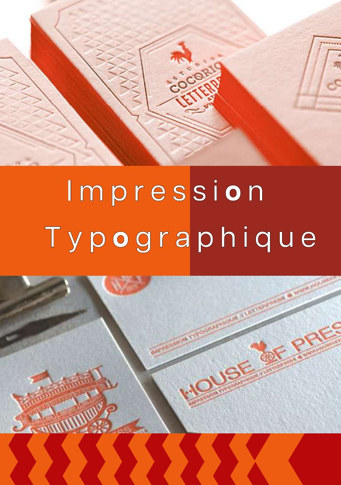
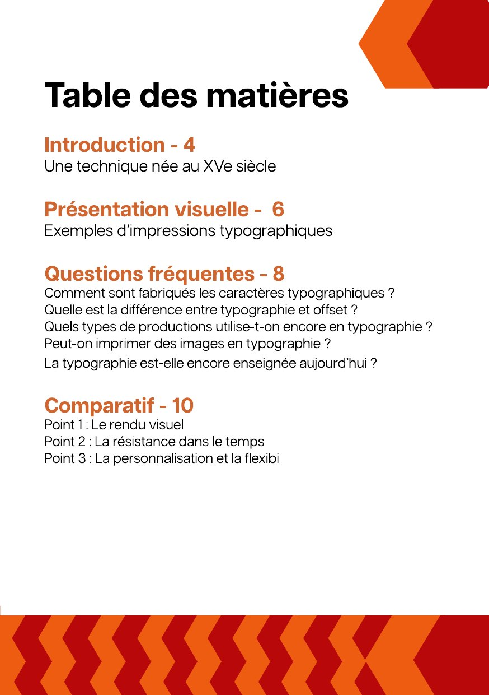

ContextThe module
The goal of the module was to understand a printing method and produce a print-ready brochure. I chose letterpress, the technique of printing with raised type.
The brochure was laid out using imposition: the pages are placed on A3 sheets in the order needed so that, once folded, they follow each other correctly.
ContentThe chapters
- Introduction: a technique born in the 15th century
- Visual overview: examples of letterpress prints
- FAQ: how type is made, the difference with offset, uses today
- Comparison with digital printing: look, durability, personalisation
Design choicesThe style
Red and orange chevrons that recall printed patterns, photos of embossed business cards and widely spaced type on the cover.
Orange#EB5A1A
Red#B4111A
Cream#F4E3D7